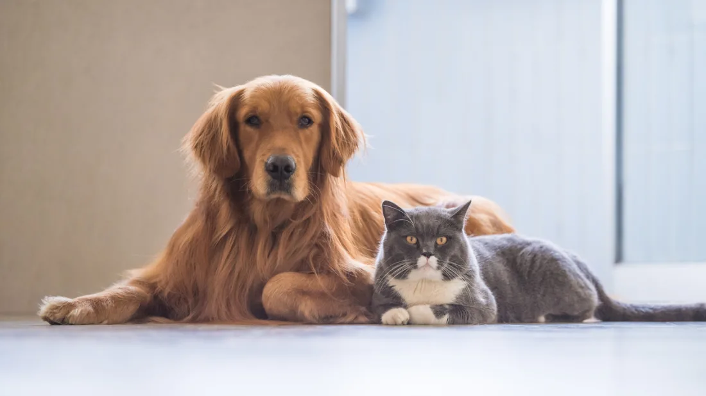

We may have a solution. You should call our shelter at 908-893-4958 or email us at eclipse@animalshelter.org for more information. It is not guaranteed that we will take every pet. Age & breed restrictions may apply.This will depend on circumstances. Make an appointment and we will have an evaluation to see if we will accept your dog or cat.The evaluation will cost $20. Surrender fees typically cost $100-$150.
Please make sure that you are sure that you can no longer take care of your dog or cat. Your dog or cat has created a strong emotional bond with you.